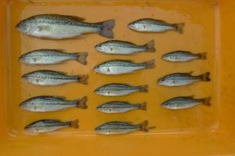

어류
배스 브라운송어 블루길
피해사례
파랑볼우럭(블루길)과 큰입배스(배스)는 자원조성 목적으로 수입되었으며 전국적으로 분포하고 있다. 파랑볼우럭(블루길)과 큰입배스(배스)로 인한 국내 생태적 피해가 보고되고 있다.양서류
황소개구리
피해사례
국내 생태계에 미칠 영향에 대한 충분한 검토 없이 양식을 통한 소득 증대와 국민의 건강증진이라는 목적으로 국내 도입된 황소개구리가 자연하천에 방치된 이후 지금까지 개체수가 폭발적으로 증가하였다.황소개구리는 현재 강원도와 전라북도 산악지역을 제외한 전국 대부분의 지역에 서식하고 있으며, 특히 전라남도, 경상남도 등 남부지역에서는 이들에 의한 생태계 훼손, 양식장 피해 등이 심각한 것으로 여러 연구자들에 의해 보고되고 있다.
파충류
늑대거북 악어거북 붉은귀거북속 전종
피해사례
붉은귀거북은 우리나라에 1980년대 후반에 애완용과 종교적인 방생의 목적으로 수입되어 서울, 경기, 충남북, 전남북, 경남북, 제주지역까지 전국적으로 널리 확산·분포하고 있다. 현재까지 붉은귀거북으로 인한 생태적·경제적 피해가 보고되고 있다.